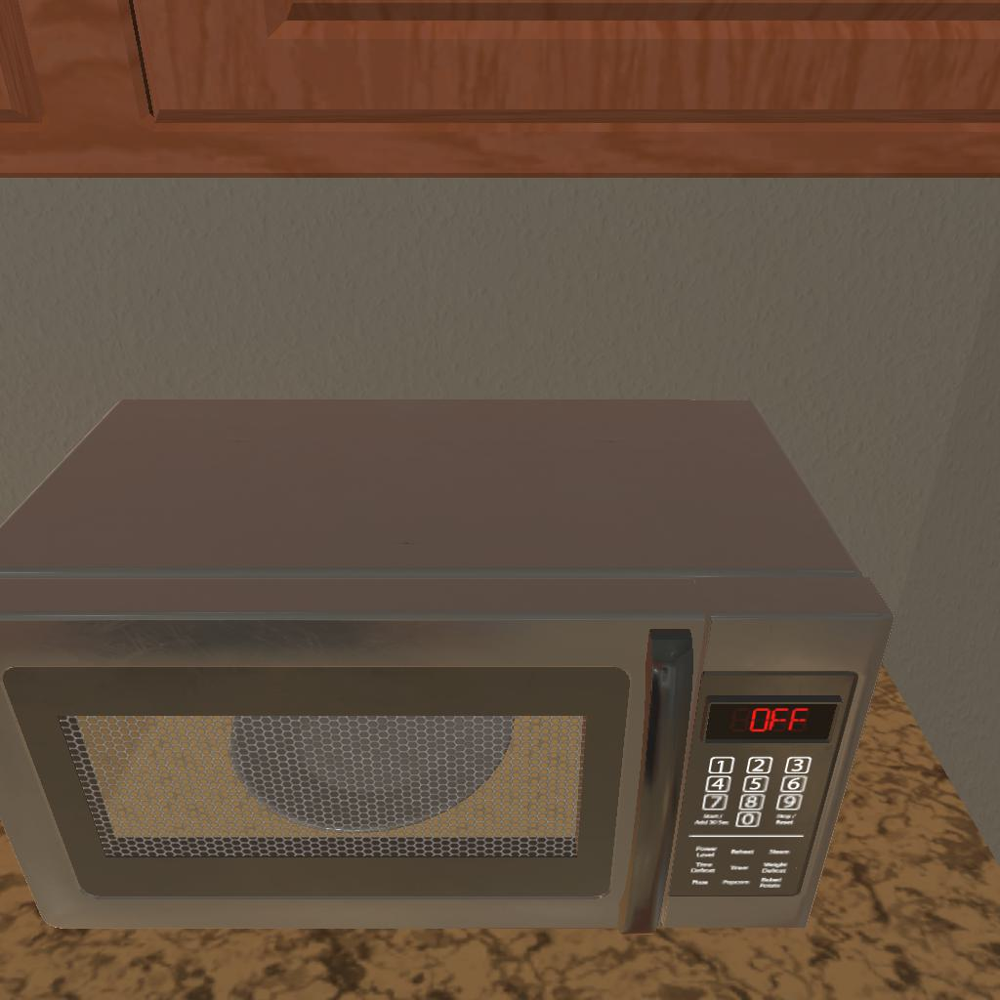

---------------------------------------------------------task: 23---------------------------------------------------------
--------------------------------------------------------------------------------------------------------------------------------------------------------------------
--------------------------------------------------------------------------------------------------------------------------------------------------------------------
Step:--------------------------------------------------------------------------5-------------------------------------------------------------------------------
----------------------------------------
VLM Prompt:
Image1:
Image2:
Image3:
**Instruction**
1. Analyze the provided images to identify all visible household objects and compare the difference between images (e.h. whether the object is opened or not and taken on hand or not), focusing on those relevant to the task description "put a hot mug in coffeemachine."
2. Use the analysis of images and the task hint "The agent must find an object of the desired type, pick it up, go to a microwave, heat the object with the microwave, then find the correct location to place it, and put it down there. The agent does not need to use the microwave button or open the microwave to heat the object, and the agent just needs to do action that is "heat the object with the microwave"." to answer the question: what is the most reasonable action in the choices for the task description "put a hot mug in coffeemachine"?
3. Decide and write the answer using the template: The answer is: (i): , where i is the real number. If there is no desired object in images, search every place based on **Initial Observation** to find the object. And if no one is exactly correct, choose a similar answer.
**Initial Observation**
You are in the middle of a room. Looking quickly around you, you can see cabinet (1-15), fridge (1), countertop (1-4), drawer (1-4), microwave (1), toaster (1), coffeemachine (1), garbagecan (1), sink (1), stoveburner (1-3), sinkbasin (1)
**Answer Choices**
(1): go to cabinet 1
(2): go to cabinet 2
(3): go to cabinet 3
(4): go to fridge 1
(5): go to countertop 1
(6): go to cabinet 5
(7): go to cabinet 6
(8): go to cabinet 7
(9): go to drawer 1
(10): go to drawer 2
(11): go to cabinet 8
(12): go to drawer 3
(13): go to cabinet 9
(14): go to cabinet 10
(15): go to drawer 4
(16): go to cabinet 11
(17): go to toaster 1
(18): go to cabinet 12
(19): go to cabinet 13
(20): go to cabinet 14
(21): go to cabinet 15
(22): go to countertop 2
(23): go to garbagecan 1
(24): go to countertop 3
(25): go to countertop 4
(26): go to sink 1
(27): go to stoveburner 1
(28): go to stoveburner 2
(29): go to stoveburner 3
(30): go to sinkbasin 1
(31): take mug 1 from coffeemachine 1
(32): examine coffeemachine 1
**Answer**
Let's think step by step by following the instructions.
----------------------------------------
----------------------------------------
Original Response:
Image Analysis:
- Image 1 shows a microwave on a countertop with its door closed and the display showing 'OFF'.
- Image 2 shows a countertop with a pepper grinder, a piece of chocolate, and a paprika. There is no mug in sight.
- Image 3 shows a coffeemachine with a mug placed under the dispenser, and the machine has a 'Serve' button illuminated, indicating that the coffee can be served.
Task Description Analysis:
The task is to put a hot mug in the coffeemachine. Since there is no mug in the microwave (Image 1) or on the countertops (Image 2), we need to find a mug. The only mug visible is the one already in the coffeemachine (Image 3). The task does not require the use of buttons or opening the microwave, so we need to pick up the mug and heat it with the microwave without interaction with buttons or doors.
Based on the Initial Observation, we know there is a coffeemachine (1) available, and from Image 3, we can see that there is already a mug in the coffeemachine. The task requires us to put a hot mug in the coffeemachine, which means we need to take the mug, heat it, and put it back.
Therefore, the most reasonable action to begin with is to take the mug from the coffeemachine.
The answer is: (31): take mug 1 from coffeemachine 1
----------------------------------------
----------------------------------------
>>> Refine Original VLM Response and Get Pure Action: take mug 1 from coffeemachine 1
----------------------------------------
-----------------------------------------------------------------
Running time: 15.36741304397583 seconds
Total Money: 14.438659999999997
-----------------------------------------------------------------
-----------------------------------------------------------------
Text Observation:You pick up the mug 1 from the coffeemachine 1.
-----------------------------------------------------------------
UNSUCCEED